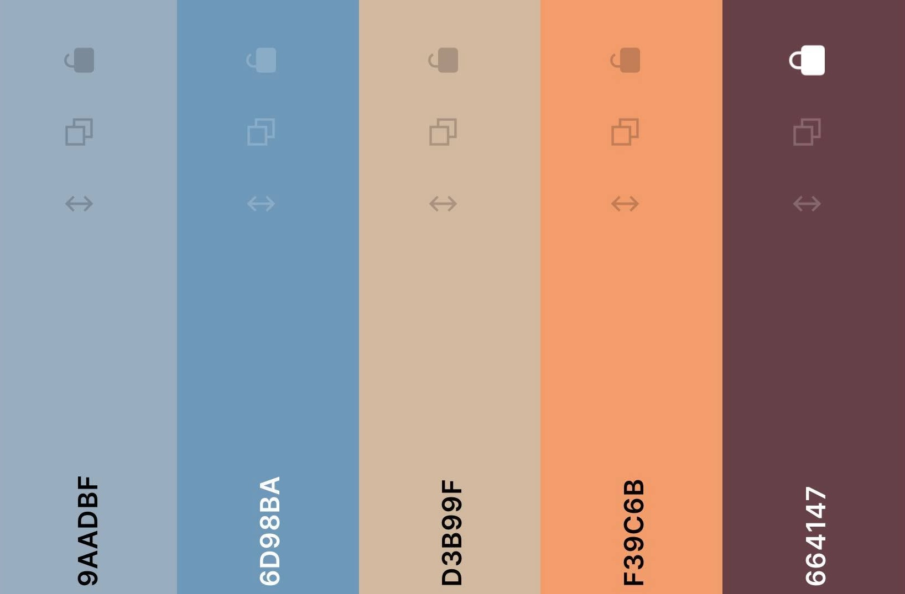

SRS (Software Requirements Specification) este un document ce proiecteza prin specificatiile concrete oferite de dezvoltatori, un sistem software, mai exact un suport de invatare a componentelor unui computer,care urmeaza a fi dezvoltat pe baza rapoartelor descrise in cadrul acestuia,totodata ajutand la o mai buna sincronizare a membrilor echipei in vederea obtinerii produsului final. Domeniu de aplicare este WEB-ul, produsul indreptandu-se spre o arie informationala si educativa.
Documentul a fost realizat utilizand sintaxa HTML (pentru creearea paginii Web) + CSS(stilizare la nivel de pagina web : culori, dimensiuni,sapatiere,font,spatiere dintre elemente).
De asemenea, in vederea structurarii intregului schelet se foloseste o lista ordonata in HTML, cat si bookmark-uri cu link-uri care te trimit prin click la un id de pe pagina.
Acest SRS este dedicat cu precadere dezvoltatorilor aplicatiei WEB, dar poate fi accesat si de utlizatorii aplicatiei.
In cazul dezvoltatorilor aplicatiei WEB este recomandata pracurgerea intregului material, categorie cu categorie, pentru a se reusi o sincronizare la nivel de echipa, pentru a intelege cerintele proiectului
si pentru a avea acces la toate tehnologiile utilizate pe diferite sectoare de lucru (backend, frontend, database connection etc. ) ca la final sa fie asigurata functionalitatea produsului. Utilizatorilor le este
recomandata accesarea categoriei Introduction, subpunctele Product Scope si Product Functions, pentru a se familiariza cu conceptul aplicatiiei , scopul si functionalitatile de care acestia pot beneficia.
Proiectul LeP - Learning by Playing Games are drept scop final realizarea unei aplicatii web, mai exact a unei platforme ce ofera utilizatorului o serie de functionalitati. Acesta poate sa vizualizeze sectia de invatare unde se poate documenta si poate studia despre fiecare componenta a calculatorului ca mai apoi sa rezolve o serie de teste in care sa isi verifice cunostiintele .Se va crea un clasament al celor mai studiosi utilizatori pe baza punctajelor obtinute la fiecare test .
Link-uri :
https://en.wikipedia.org/wiki/Software_requirements_specification
https://github.com/rick4470/IEEE-SRS-Tempate
https://www.geeksforgeeks.org/software-requirement-specification-srs-format/
https://relevant.software/blog/software-requirements-specification-srs-document/
Produsul final este o platforma educativa, mai exact o aplicatie web (open-source) ce functioneaza independent si este destinata uzului general. Fiind o aplicatie open-source, se presupune a fi utilizata de un numar nelimitat
de useri, incluzand si un sistem de logare,ce aduce o serie de functionalitati in plus. Componentele majore ale aplicatie sunt doua : FRONTEND si BACKEND.
Partea de FRONT (HTML,CSS,JavaScript) face legatura cu user-ul,prin intermediul ei acesta poate vedea si interactiona cu WEB sever-ul, beneficiind astfel de toate functionalitatile aplicatiei.
Partea de BACK(Node.js, Typescript, Typeorm) asigura corectitudinea functionalitatilor, fiind zona de implementare propriu-zisa. Desigur, ca modalitate de stocare a datelor ce intra in componenta produsului,
este folosita o baza de date MySQL.
Atasez diagrama aplicatiei ce ilustreaza componentele principale din care este alcatuita :
Aceasta aplicatie ofera utilizatorului o serie de functionalitati:
Aplicatia LeP(Learning by Playing Games) este destinata tuturor utilizatorilor de aplicatii web. Datorita functionalitatilor pe care le detine, aceasta se adreseaza in special utilizatorilor care doresc sa afle informatii despre diferite componente hardware
ale calculatorului sau dispozitivului mobil. Se considera ca utilizatorul are cunostintele de baza de operare pe internet si acces la un dispozitiv conectat la retea.
Aplicatia va avea in principiu doua clase majore de utilizatori : utilizatori activi - inregistrati / ce folosesc aplicatia pentru functionalitatile premium de testare a cunostintelor pe baza quizurilor de la final, respectiv simpli
vizitatori care intra in general pentru a vizualiza clasamentul jucatorilor si a cauta informatii cu privire la o componenta din aplicatie. Se presupune ca, categoria majoritara va fi cea a userilor activi care vor frecventa regulat aplicatia.
Fiind o aplicatie web, LeP poate fi accesata de pe toate sistemele de operare( Windows, Linux cat si MacOS) respectiv de pe orice tip de browser. Aceste medii de operare constau intr-o interfata cu utilizatorul furnizata in general de un manager de aplicatii , repectiv de o interfata de programare a aplicatiilor ( API ) frunizata de managerul de aplicatii. Aplicatia functioneaza de pe orice dispozitiv/PC cu specificatii standard, chiar minimale, din punctul de vedere al vitezei proceorului, RAM, ROM. Dispozitivul trebuie sa fie conectat la internet.
In ceea ce priveste elementele de design, se va recurge la un design ce va facilita utilizarea cu usurinta de catre toate persoanele interesate de site. Este de datoria dezvoltatorilor sa respecte niste specificatii stabilite
de comun acord cu privire la paleta de culori, dimensiune font, dimensiuni imagini, spatiere etc.
Paleta de culori aleasa : 
Culoarea este extrem de importanta in partea de front-end, de aceea paleta de culori trebuie aleasa cu grija, ci nu in orice fel. S-a decis alegerea unui albastru pal (#9AADBF) alaturi de un albastru mai inchis (#6D98BA) si un bej folosit des in partea de background a aplicatiei (#D3B99F) pentru a oferi un efect linistitor la vizualizarea paginilor, in timp ce portocaliul (#F39C6B), fiind o culoare care atrage atentia, are rolul de a pune in evidenta anumite detalii mai importante. Ultima culoare din paleta (#664147) este cel mai des folosita pentru ca reflecta eleganta si se potriveste perfect cu subiectul aplicatiei LeP.
De asemenea, exista constrangeri si pe partea de Backend : fiecare membru din echipa trebuie sa scrie cod in limbajele stabilite initial : Node.js, Typescript, Typeorm.
Aplicatia intra in categoria aplicatiilor web, iar folosirea acesteia va fi una intuitiva,mai exact sugerata de intrega interfata ce faciliteaza utilizatorului navigarea in aplicatie si descoperirea de comenzi utile.
Daca utilizatorul pierde conexiunea cu internetul, atunci inevitabil aplicatia web nu va mai raspunde si functionalitatile sale devin indisponibile.
Dependenta SOFTWARE: Daca dezvolatorii aplicatiei nu acorda atentie necesara asupra codului scris, mai ales, atunci cand folosesc API - uri ameninta performanta si securitatea aplicatiei.
Conexiunea cu baza de date trebuie sa fie una sigura, este foarte importanta structurarea sa deoarece pe baza acesteia se construiesc filtrele de cautare multi-criteriala.
Interfetele dintre site-ul web si un utilizator sunt prezente printr-un set de elemente de arhitectura prezente in pagina web .Implementarea unei bari de cautare in scopul vizualizarii informatiilor despre o anumita componenta usureaza procesul de cautare realizat de utilizator pe site-ul web .
Totdata , sistemul de logare si autentificare a utilizatorilor reprezinta un mijloc prin care informatiile acestora precum date de identificare,istoricul cautarilor pe site-ul web, albumele preferate sa fie confidentiale .
Din punct de vedere hardware , site-ul web trebuie accesat de pe un device care corespunde normelor de functionare normala fiind conectat si la internet .
Din punct de vedere software , site-ul web e conectat la o baza de date MySQL , putand fii accesat de pe toate sistemele de operare ( Windows , Linux ) de pe browsere performante precum Firefox sau Google Chroome . Ca si mesaje cu alte componente software , in momentul cautarii de catre utilizator a unei informatii , site-ul web obtine informatii din baza de date prin intermediul interogarilor, informatii pe care le va afisa in pagina din browser-ul utilizatorului in urma comunicarii dintre server si browser-ul acestuia . . Site-ul web va fi disponibil doar utilizatorilor care acceseaza serviciul www oferit de internet care are la baza protocolul TCP/IP .
. Ca si protocoale de comunicare intalnite in cadrul aplicatiei sunt HTTP si FTP ,ultimul fiind folosit in transmiterea statisticilor.
4.1.1 Description and Priority Provide
Priority Medium
Componenta permite utilizatorului sa se inregistreze pe site folosind un nume de utilizator si o parola.
4.1.2 Stimulus/Response Sequences
Utilizatorul apasa click pe casetele unde trebuie introduse datele – Sistemul permite utilizatorului introducerea de text in casetele respective.
Utilizatorul introduce text in campurile necesare inregistrarii – Sistemul verifica ca datele introduse sa corespunda campului completat si sa fie corecte.
Utilizatorul apasa pe butonul de inregistrare, dar nu a completat toate campurile necesare – Sistemul nu permite inregistrarea si atentioneaza utilizatorul.
Utilizatorul apasa pe butonul de inregistrare, iar toate campurile sunt completate corect – Sistemul inregistreaza cu succes utilizatorul in baza de date.
4.1.3 Functional Requirments
Preluarea textului din field-urile de input din form-ul de inregistrare.
Request de la frontend catre backend si transmiterea datelor din frontend.
Accesarea bazei de date din backend si interogarea ei pentru a verifica ca nu exista deja un utilizator cu acelasi nume. In caz afirmativ se vor insera datele noului user in tabela Users.
Response de la backend catre frontend si afisarea continutului corespunzator in frontend in functie de response. In cazul in care username-ul exista deja in baza de date se va afisa faptul ca username-ul ales este indisponibil.
4.2.1 Description and Priority Provide
Priority Medium
Componenta permite utilizatorului sa se logheze pe site folosind un nume de utilizator si o parola.
4.2.2 Stimulus/Response Sequences
Utilizatorul apasa click pe casetele unde trebuie introduse datele – Sistemul permite utilizatorului introducerea de text in casetele respective.
Utilizatorul apasa pe butonul de logare, dar nu a completat toate campurile necesare – Sistemul nu permite inregistrarea si atentioneaza utilizatorul.
Utilizatorul apasa pe butonul de logare, dar introduce un username inexistent in baza de date – Sistemul nu permite logarea si atentioneaza utilizatorul faptul ca a introdus un username inexistent.
Utilizatorul apasa pe butonul de logare, dar introduce o parola gresita – Sistemul nu permite logarea si atentioneaza utilizatorul faptul ca a introdus o parola gresita.
Utilizatorul apasa pe butonul de logare, iar toate campurile sunt completate corect – Sistemul permite logarea cu succes a utilizatorului pe site.
4.2.3 Functional Requirments
Preluarea textului din field-urile de input ale username-ului si parolei.
Request din frontend catre backend.
Call catre baza de date din backend si interogarea acesteia pentru verificarea existentei user-ului si corectitudinea parolei. Daca datele corespund se interogheaza baza de date din nou pentru a prelua numele si id-urile albumelor personale
ale utilizatorului.
Response de la backend catre frontend cu datele obtinute in urma interogarii.
Afisarea continutului corespunzator si incarcarea componentei ce contine numele utilizatorului pe pagina principala plus numele albumelor salvate in sectiunea “Saved albums” si numele albumelor primite din partajari in sectiunea "Received
albums" din meniu.
Setarea cookie-urilor.
4.3.1 Description and Priority Provide
Priority High
Componenta permite cautarea unei componente si generarea rezultatului corespunzator.
4.3.2 Stimulus/Response Sequences
Utilizatorul apasa pe bara de search – Sistemul focuseaza bara de search si permite utilizatorului introducerea de text.
Utilizatorul apasa enter dupa ce a introdus text in bara de cautare – Sistemul afiseaza rezultatul pentru acea cautare sau un mesaj de eroare in cazul in care nu sunt gasite date in conformitate cu inputul introdus.
4.3.3 Functional Requirments
Preluarea textului din field-ul de input al barii de cautare.
Request din frontend catre backend.
Call catre baza de date din backend si interogarea acesteia pentru a selecta datele care corespund cu textul introdus in bara de cautare.
Response din backend catre frontend cu datele obtinute in urma interogarii.
Crearea componentelor de afisat in frontend, in functie de datele primite de la backend.
4.4.1 Description and Priority Provide
Priority Low
Componenta permite unui utilizator logat sa se deplaseze pe site pe alte pagini asociate fiecarui buton.
4.4.2 Stimulus/Response Sequences
START - deplasare catre pagina de start.
LEARN - deplasare catre pagina de informatii despre fiecare componenta.
TEST - deplasare catre pagina de testare(joc).
RANKING - deplasare catre pagina de generare a clasamentului bazat pe punctajul fiecarui utilizator.
4.5.1 Description and Priority Provide
Priority Low
Componenta contine Logo-ul siteului, descrierea siteului si buton de deconectare. Aceasta componenta apartine fiecareia dintre paginile proiectului.
4.16.2 Stimulus/Response Sequences
Logo - prin apasarea acestui buton poti ajunge la fel ca de pe butonul START pe pagina de start.
Deconectare - Componenta permite unui utilizator logat sa se delogheze de pe site.
4.6.1 Description and Priority Provide
Priority Low
Componenta contine sectiuni de reguli pentru utilizatori si adresa de contact.
Aceasta componenta apartine fiecareia dintre paginile proiectului.
4.6.2 Stimulus/Response Sequences
Sectiuni de reguli pentru utilizatori - permite deplasarea pe pagina de reguli.
4.7.1 Description and Priority Provide
Priority Medium
Componenta permite utilizatorilor selectarea si vizualizarea numelui uneia dintre cele 10 componente hardware specifice unui calculator:
CPU, random access memory (RAM), monitor, mouse, tastatura, computer data storage, graphics card, sound card, speakers si motherboard.
4.7.2 Stimulus/Response Sequences
Utilizatorul selecteaza unul dintre butoanele de expandare in functie de componenta hardware despre care doreste sa studieze – Sistemul permite utilizatorului sa expandeze un singur buton, cu alte cuvinte nu poate invata despre mai multe componente in acelasi timp.
4.7.3 Design
Aceste butoane sunt plasate in sectiunea de "Learn", imediat dupa o scurta descriere despre importanta componentelor hardware.
Designul butoanelor a fost gandit in asa fel incat acestea sa se afle in centrul paginii, unul dupa altul, pentru a atrage atentia utilizatorului.
De aceea culoarea aleasa a fost #664147, cea mai inchisa din paleta de culori descrisa mai sus.
Titlul de pe fiecare buton "-numele componentei- -> Start learning", este scris cu font "Pristina", 30px, alb, pentru a arata mai elegant in comparatie cu restul textului de pe pagina.
De asemenea s-a folosit un text-shadow pentru aceste titluri putin mai inchis decat culoarea butoanelor cu scop de accentuare.
Butoanele au box-shadow negru cu o rotunjire la colturi (border radius) de 0.4rem, pentru a da aspectul unui buton real iar la capatul lor apare un "+" pentru a evidentia faptul ca
prin apasarea butonului respectiv, sectiunea se expandeaza, oferind acces utilizatorilor la informatii.
Fiecare buton este plasat intr-o sectiune dreptunghiulara cu fundalul #6d98ba pentru ca nu am vrut ca utilizatorul sa vada niste simple butoane puse unele dupa altele. Aceasta sectiune pe care este"asezat" butonul se expandeaza de asemenea la clickul pe buton.
4.8.1 Description and Priority Provide
Priority Medium
Componenta permite utilizatorului sa "scrolleze" dupa ce a apasat butonul de expandare pentru o cantitate mai mare de informatie.
4.8.2 Design
In acest moment utilizatorul incepe procesul de invatare, fiind ajutat de multitudinea de imagini specifice fiecarei componente, gifuri cu demonstratii ale functionalitatilor,
text subliniat, italic, boldat, pentru a ajuta observarea detaliilor mai importante. Unele imagini si gifuri sunt asezate in partea dreapta a sectiunii iar alaturi, in partea stanga,
apare informatia. Astfel, utilizatorul poate sa vizualizeze scrisul si imaginea in acelasi timp si isi simplifica treaba. Fontul a fost ales de culoare alba din moment ce backgroundul
sectiunii expandate este de culoare inchisa pentru ca se doreste ca userul sa vizualizeze mai bine informatia.
In partea opusa a scrollului (adica partea stanga), am adaugat o linie verticala de latime .6rem care incepe din varful sectiunii cu informatie iar ideea a fost sa se ofere aspectul unei dungi de "highlight" (de aceea s-a ales culoarea #F39C6B).
4.8.3 Functional Requirments
Aranjarea informatiei in pagina in functie de dorinta utilizatorului.
4.9.1 Description and Priority Provide
Priority High
Aceasta sectiune a fost pusa pentru ca jucatorul sa nu inceapa direct rezolvarea testelor, ci sa fie instiintat de anumite reguli
in caz ca se razgandeste si vrea sa paraseasca jocul.
4.9.2 Stimulus/Response Sequences
La apasarea butonului "Game" din navigation bar, utilizatorul este introdus intr-o sectiune introductiva de dinaintea inceperii jocului in care sunt puse la dispozitie informatiile de care trebuie sa tina cont.
In partea dreapta jos a acestei sectiuni de informatii sunt doua butoane:
"Start quiz" - jucatorul este introdus pe pagina primului nivel
"Exit quiz" - jucatorul ajunge la pagina principala (nu doreste continuarea jocului)
4.9.3 Design
Designul sectiunii este gandit ca un dreptunghi (box) cu colturile rotunjite (border-radius: 10px) asezat pe mijlocul paginii (background pagina:#6d98ba), cu box-shadow negru ca sa iasa in evidenta.
Cele doua butoane descrise mai sus au border destul de gros: 6px de culoare #664147 pentru ca s-a dorit sa fie evidentiate mai mult decat sectiunea de informatii.
De aceea si textul a fost ales cu o dimensiune mai mare(20px) comparativ cu detaliile din dreptunghi(15px). La "trecerea" cu mouseul peste ele,
se observa ca acestea isi maresc putin dimensiunea(transform: scale(1.1)) cu o tranzitie de 0.3s si se coloreaza la fel ca borderul. De asemenea textul devine din negru alb.
4.10.1 Description and Priority Provide
Priority High
Utilizatorii pot rezolva in total 3 teste: usor(level 1), mediu(level 2), greu(level 3).
"Level 1" - Jucatorul rezolva 10 grile simple cu o singura varianta de raspuns. Timp: 300 secunde
"Level 2" - Jucatorul rezolva 10 grile cu variante multiple de raspuns. Timp: 500 secunde
"Level 3" - Jucatorul raspunde la 10 intrebari scriind raspunsul (un singur cuvant) in cadranul de text. Timp: 600 secunde
4.10.2 Stimulus/Response Sequences
Utilizatorul apasa pe butonul “Start quiz” – Sistemul afiseaza pagina primului nivel iar temporizatorul incepe numararea inversa a secundelor.
Sistemul verifica ca datele (raspunsurile) introduse de jucator sa fie corecte si sa existe in baza de date, iar in functie de acest aspect punctajul pe fiecare nivel este calculat si adunat la punctajul final.
Pe parcursul rezolvarii unui nivel, jucatorul nu poate sa paraseasca jocul indiferent de butonul apasat pentru ca trebuie sa termine completarea raspunsurilor si submisia
La finalul testului, prin apasarea butonului "Submit", scorul este afisat.
Sub scor este butonul "Next level" care permite jucatorului trecerea la urmatorul nivel doar in momentul in care si-a aflat punctajul.
4.10.3 Design
Butoanele "Next level" si "Submit" au designul la fel ca cele descrise in capitolul
Pentru backgroundul nivelelor s-a ales culoarea cea mai inchisa din paleata de culori pentru ca jucatorul sa nu oboseasca vizual si sa se concentreze pe test.
Fiecare intrebare (scrisa cu font bold) impreuna cu variantele de raspuns sunt cuprinse intr-o sectiune cu border-radius: 30px si border-width: 0.7ch, astfel intrebarea si raspunsurile se incadreaza perfect.
Am ales margin: 13px 0 pentru ca cele 10 sectiuni sa nu fie lipite intre ele si border: 2px solid #f39c6b pentru un aspect de box section.
4.10.0 Functional Requirments
Selectarea datelor introduse si validarea acestora. In urma validarii datele vor fi trimise catre backend.
Onclick event pe raspuns/raspunsuri: o functie denumita "response()" care preia ca parametri numarul (id-ul) intrebarii si
Selectarea variantelor de raspuns/cuvintelor introduse pe care utilizatorul doreste sa il/le considere ca raspuns corect la intrebarile primite si trimiterea acestora catre backend.
Accesarea din backend a bazei de date si efectuarea operatiilor necesare pentru ca scorul respectiv sa apara.
Afisarea unui scor (cuprins intre 1 si 10 puncte) dupa submiterea fiecarui test.
4.11.1 Description and Priority Provide
Priority Medium
Componenta permite utilizatorului logat care se afla in timpul rezolvarii unui quiz sa vada timpul (numarul de secunde) pe care il mai are la dispozitie sa termine rezolvarea.
4.11.2 Stimulus/Response Sequences
Utilizatorul scroleaza pentru a continua rezolvarea de intrebari si observa permanent cadranul in care se afla cronometrul in coltul din stanga sus (cadranul e "sticky").
4.11.3 Functional Requirments
Identificarea nivelului pe care utilizatorul il rezolva pentru a se face rost de numarul corespunzator de secunde si transmiterea acestor date din frontend catre backend.
Accesarea bazei de date din backend si efectuarea operatiilor necesare pentru ca temporizatorul respectiv sa porneasca numaratoarea inversa.
4.12.1 Description and Priority Provide
Priority High
Dupa parcurgerea celor 3 nivele de dificultate, va exista un buton “Ranking” care va trimite catre o pagina unde se va genera top 30 jucatori in functie de punctajul final obtinut pe fiecare nivel.
Pe pagina respectiva va exista un buton "Download RSS data feed" prin care utilizatorul poate downloada clasamentul in format XML.
4.12.2 Stimulus/Response Sequences
Utilizatorul apasa pe butonul “Ranking” – Sistemul genereaza clasamentul primilor 30 de jucatori cei mai de succes si incarca pargina corespunzatoare unde se gaseste clasamentul.
Utilizatorul apasa pe butonul "Download RSS data feed" - Sistemul genereaza clasamentul in format XML si il ofera spre download.
4.12.3 Functional Requirments
Request din frontend catre backend.
Accesarea si interogarea bazei de date din backend pentru a selecta animalele cu cele mai multe like-uri.
Generarea paginii cu clasamentul conform datelor obtinute in urma interogarii.
Generarea documentului in format XML pregatit pentru a fi downloadat.
4.13.1 Description and Priority Provide
Priority High
Componenta permite utilziatorului logat vizualizarea si afisarea punctajului final acumulat.
4.13.2 Stimulus/Response Sequences
Userul apasa pe lista de tip dropdown din sectiunea “Final score” – Sistemul afiseaza punctajele salvate ale utilizatorului pentru fiecare nivel de care a trecut si ii permite selectarea unuia.
Userul selecteaza unul dintre nivele si apasa pe butonul “Show score” – Sistemul afiseaza scorul nivelului selectat.
4.13.3 Functional Requirments
Incarcarea punctajelor salvate in sectiunea "Saved final score" specifice userului logat atunci cand se acceseaza pagina principala a site-ului.
Request din frontend catre backend.
Accesarea si interogarea bazei de date din backend pentru a selecta punctajul corespunzator nivelului dorit.
Response de la backend catre frontend cu datele obtinute in urma interogarii.
Crearea componentelor de afisat in frontend, in functie de datele primite de la backend.
4.14.1 Description and Priority Provide
Priority Low
Componenta permite unui utilizator logat sa se delogheze de pe site.
4.14.2 Stimulus/Response Sequences
Userul apasa pe butonul “Log out” – Sistemul delogheaza utilizatorul de pe site.
4.14.3 Functional Requirments
Request din frontend catre backend.
Update cookie cu statusul utilizatorului pe 0 (delogat).
Response de la backend catre frontend si actualizarea componentelor din frontend in urma delogarii.
Se va dori ca cautarea, generarea si afisarea componentelor si a informatiilor sa se realizeze cat mai rapid. Prin urmare se va opta pentru imagini de tip .jpg / .jpeg care se pot incarca rapid, iar baza de date va fi conceputa in asa fel incat sa sprijine rapiditate request-urilor de date.
Nu vor fi adaugate imagini sau informatii cu impact emotional asupra utilizatorilor.
Se va recurge la tehnici de prevenire a atacurilor precum SQL injection, iar parolele utilizatorilor vor fi hashuite in baza de date.
Usability
Site-ul poate fi utilizat prin intermediul unui browser de catre persoanele dornice sa afle informatii referitoare la diverse componente si de a vizualiza imagini cu acestea.
Accesibility
Se va recurge la un Design UI/UX care sa ofere posibilitatea tuturor persoanelor, inclusiv cele cu probleme (distingerea culorilor, focusarea atentiei, etc.), sa acceseze si sa foloseasca site-ul. Pentru aceasta se va tine cont de
contrastul culorilor si marimea fontului sa fie potrivite, iar navigarea pe pagina sa fie cat mai usoara.